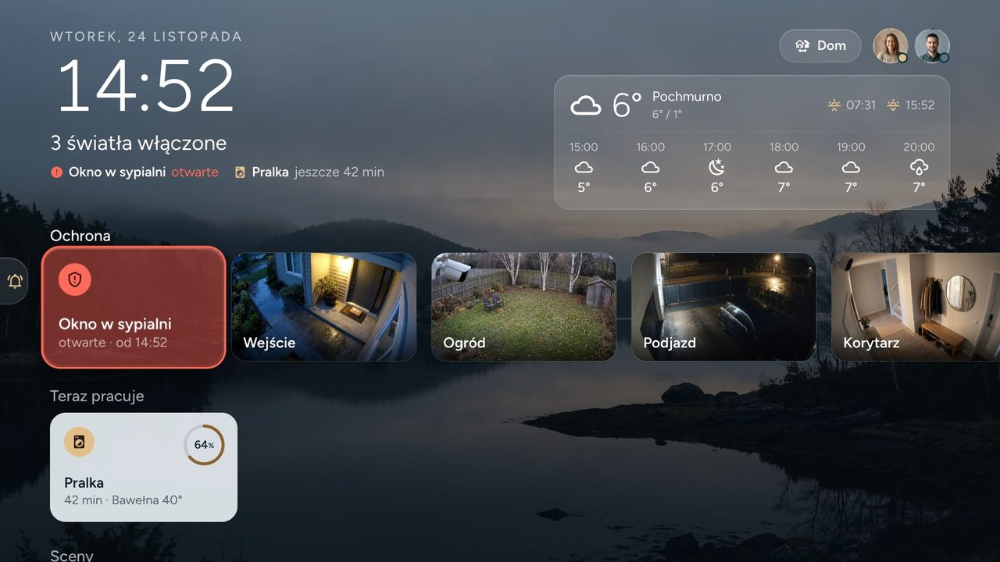
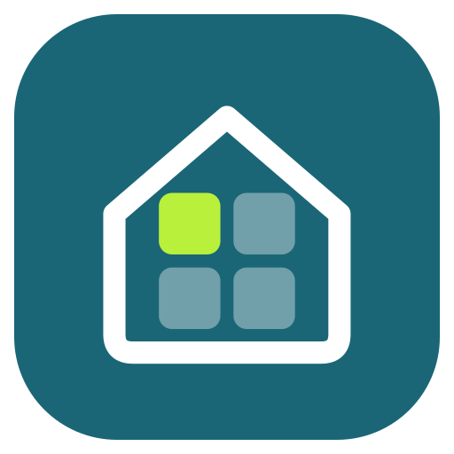
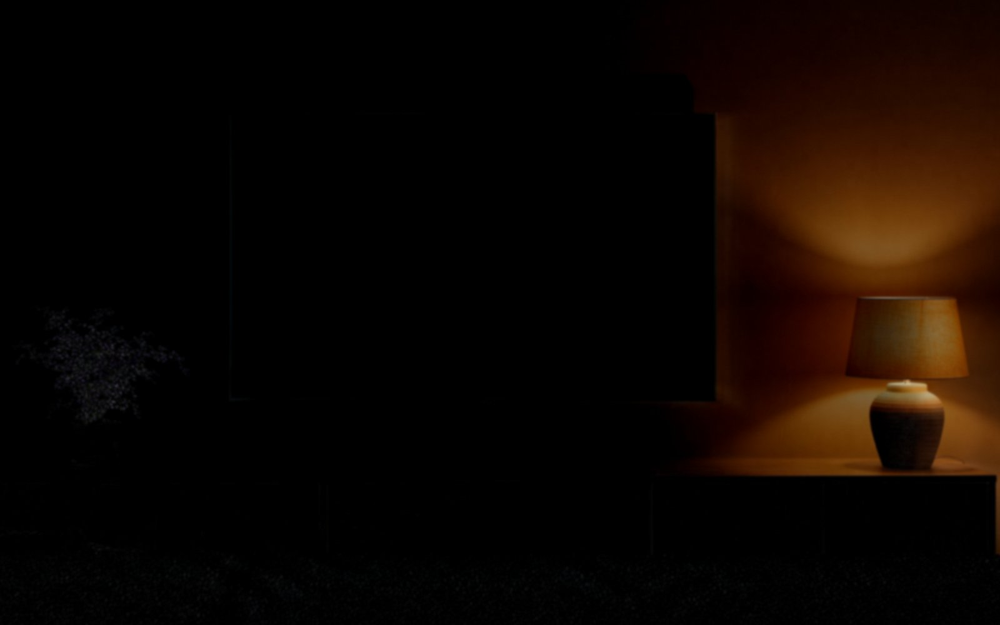
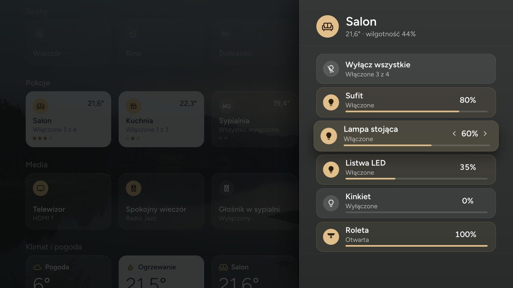
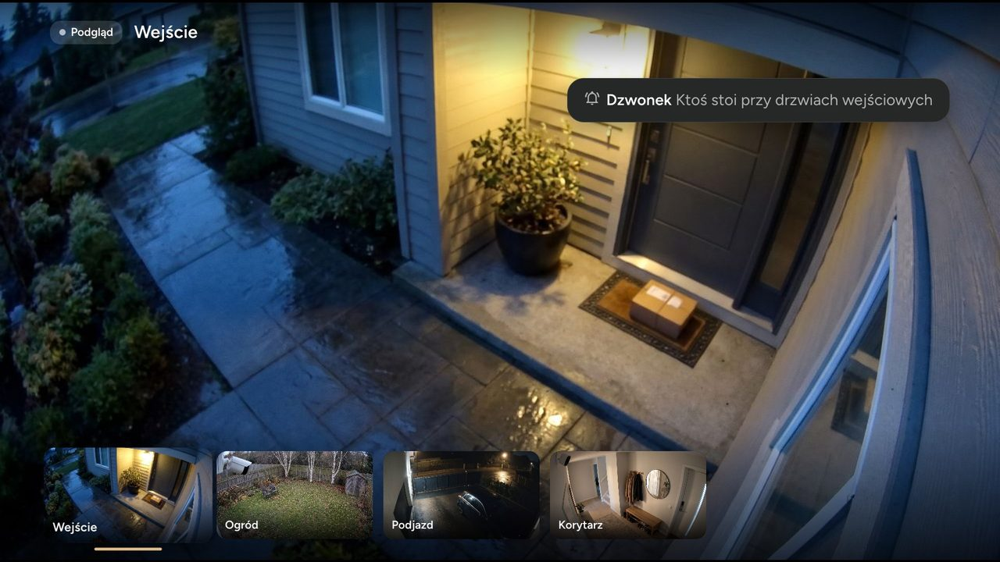
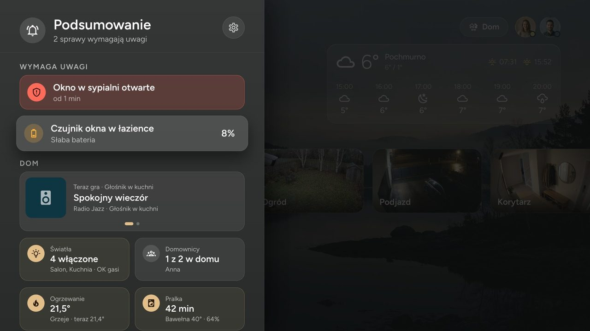
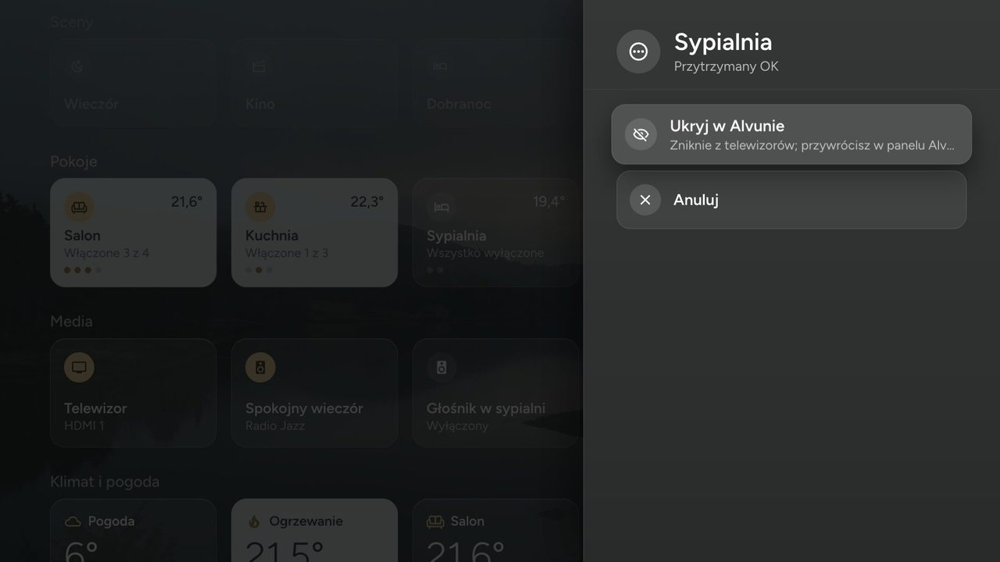
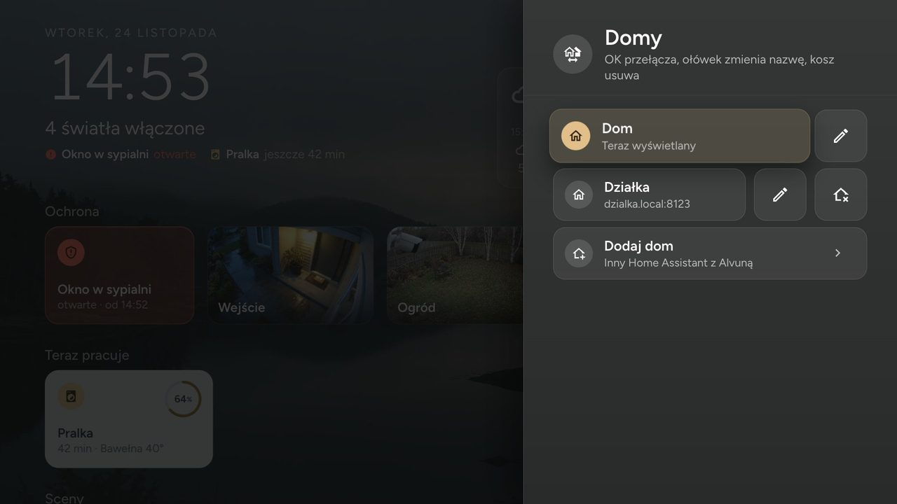
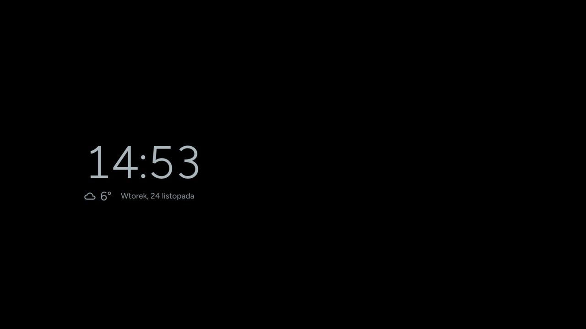
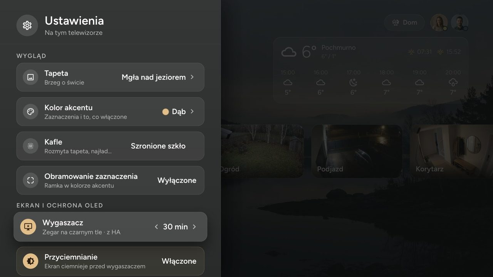

Układa się sam
Pokoje z obszarów i pięter Home Assistanta, w każdym światła, rolety i termometr. Kamery, domownicy, pogoda i to, co teraz pracuje, trafiają na swoje miejsca. Dodasz urządzenie, a telewizor pokaże je od razu.

AlvunaAlvuna pokazuje Home Assistanta na dużym ekranie: pokoje, światła, sceny, kamery i pogodę, ułożone pod pilota. Nie budujesz dashboardu i nic nie wpisujesz na telewizorze.
LG webOS · Google TV wkrótce · działa też w przeglądarce telewizora



To działająca aplikacja z przykładowym domem. Najedź na ekran, żeby sterować samemu.
Telewizor nie dostaje Twojego hasła. Pokazuje kod, a Ty potwierdzasz go w Home Assistancie, w którym jesteś już zalogowany.
W Home Assistancie: Ustawienia → Marketplace. Instalacja nie wymaga restartu.
Alvuna sama znajdzie Home Assistanta w sieci i pokaże kod.
Ustawienia → Urządzenia i usługi → Wykryte → Alvuna TV. Po chwili telewizor pokazuje Twój dom.

Pokoje z obszarów i pięter Home Assistanta, w każdym światła, rolety i termometr. Kamery, domownicy, pogoda i to, co teraz pracuje, trafiają na swoje miejsca. Dodasz urządzenie, a telewizor pokaże je od razu.

Światła z jasnością, rolety, temperatura i wilgotność. Wszystko pilotem, bez szukania po menu.

Obraz z każdej kamery na całym ekranie. Gdy ktoś zadzwoni, automatyzacja pokaże wejście na każdym telewizorze.

Otwarte okno, zalanie, słaba bateria, koniec prania, jutrzejszy wywóz śmieci. Wszystko w jednym panelu po lewej.

Przytrzymaj OK na kaflu albo użyj panelu Alvuna w Home Assistancie: ukryjesz, zmienisz nazwę i kolejność. Bez YAML-a.

Mieszkanie, dom rodziców, działka. Każdy sparowany osobno, przełączasz jednym przyciskiem.

Przyciemnianie, wygaszacz z wędrującym zegarem i niewidoczne przesuwanie obrazu. Animacje płynne nawet na zwykłym telewizorze.
Alvuna nie jest stroną Home Assistanta powiększoną na telewizor. Każdy ekran powstał od nowa dla pilota i dla odległości kilku metrów.
Każdy ekran przejdziesz samymi strzałkami. Wstecz zawsze zamyka to, co się otworzyło, a z pierwszego rzędu wraca do telewizora.
Zaznaczony kafel rośnie i jaśnieje. W ustawieniach dodasz obramowanie w kolorze akcentu.
Ekran dla obrazu 1920 × 1080 oglądanego z kilku metrów: żaden tekst nie jest mniejszy niż 24 piksele, kafle są duże.
Szczegóły wysuwają się z boku, a dom zostaje w tle. Nie gubisz się w menu i zawsze wiesz, jak wrócić.
Menu kafla bez wchodzenia w ustawienia: ukryjesz to, czego nie potrzebujesz.
Wskaźnik zaznacza kafel, kliknięcie to OK, a kółko przewija rzędy.

Animują się tylko przesunięcia i przezroczystość, które liczy karta graficzna. Ekran przerysowuje wyłącznie to, co się zmieniło, a szron jest malowany raz, a nie rozmywany na żywo w każdej klatce. Pliki aplikacji są skompresowane, a ikony bierze z Twojego Home Assistanta.
W Ustawieniach na telewizorze, pilotem:
Alvuna nie ma własnej chmury. Telewizor rozmawia tylko z Twoim Home Assistantem, a my nie dostajemy żadnych danych.
Polityka prywatnościHome Assistanta 2025.1 lub nowszego i telewizora LG z webOS. Aplikacja na Google TV jest w przygotowaniu. Do tego czasu Alvuna działa w przeglądarce telewizora pod adresem Twojego Home Assistanta z dopiskiem /alvuna/tv/.
Nie. Układ powstaje z obszarów, pięter i urządzeń, które masz już w Home Assistancie. Jeśli coś jest zbędne, ukryjesz to w panelu Alvuna albo przytrzymując OK na kaflu.
Telewizor dostaje osobnego użytkownika bez uprawnień administratora. Domyślnie łączy się tylko w sieci lokalnej. Na dostęp spoza domu zgadzasz się sam przy parowaniu.
Usuń urządzenie Alvuna TV w Ustawieniach → Urządzenia i usługi. Dostęp znika natychmiast. Na samym telewizorze możesz też się wylogować w Ustawieniach → Połączenie.
Integracja dla Home Assistanta jest darmowa i ma otwarty kod na licencji MIT.